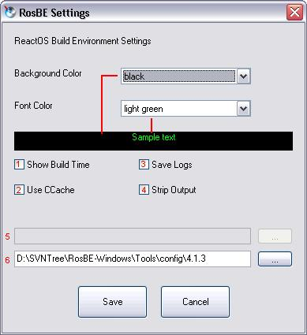

As you can see, it is possible to edit the font and background color
with RosBE Configurator. Additionally you can check the look in the
Preview below.
Additionally you can Enable/Disable many Things with it. So you can
switch on/off showing the time the build process needed. A new feature
is the usage of ccache which can speed up the build process for ~5-10%
for a cost of ~1,5 GB of Cache size. You can switch off/on the logging
and stripping the Output Files, too. Stripping might help if you want
to use ReactOS on a PC with less than 48 MB RAM, because stripped apps
use less RAM.